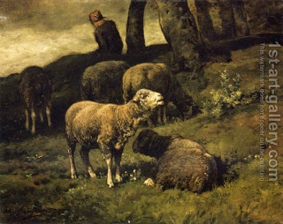

Bava Kamma 55 - Guard Your Animal
One who brought a sheep into a fold and properly locked the gate after it, but it escaped and damaged the property of another, is not liable to pay for the damage; one who didn't properly lock the gate is liable.
If the fold was breached at night, or robbers breached it, he is not liable; if the robbers took the sheep out, the robbers are liable.
If he left the sheep in the sun or gave it over to an deaf-mute, deranged, or minor and it escaped and damaged, he is liable; if he gave it over to a shepherd, the shepherd assumes the responsibility.